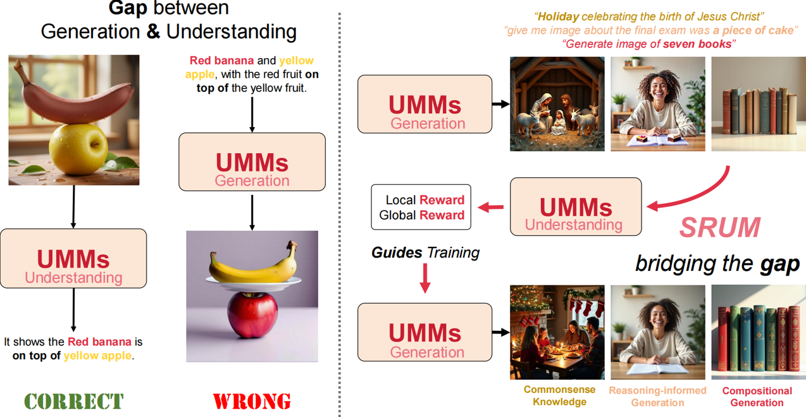
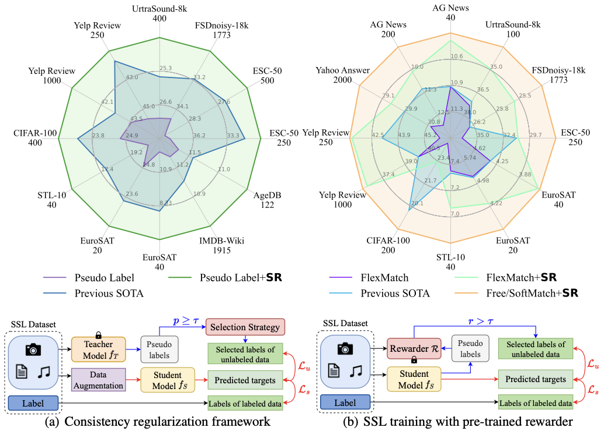
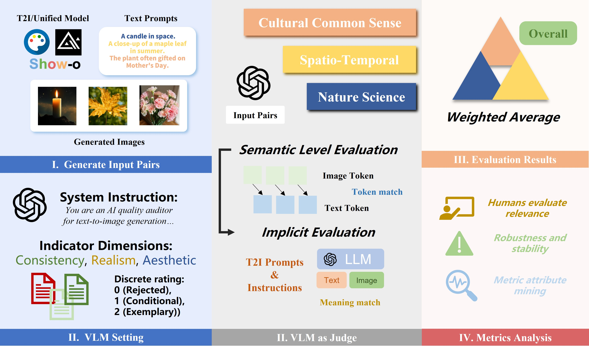
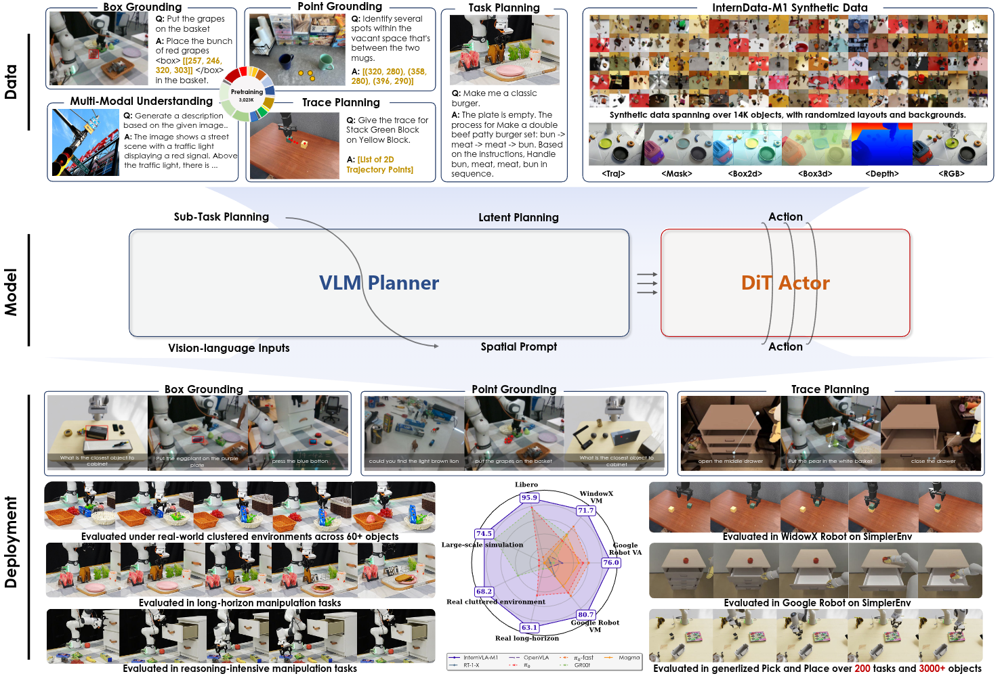

WEIYANG JIN
PhD Student of IDS (MMLab) [GitHub] [twitter/X] [Scholar] I'm looking for industrial internship opportunities about UMMs!!! |
I am a Ph.D. student at MMLab, University of Hong Kong, starting from November 2025, supervised by Prof. Xihui Liu. Prior to that, I obtained my Bachelor of Engineering degree in EE from Beijing Jiaotong University (from 2021 to 2025). My research interests lie in machine learning, with a particular focus on how to build the visual intelligence via representation and self-evolution.
*: Equal Contribution, †: Project Leader

SRUM: Fine-Grained Self-Rewarding for Unified Multimodal Models
Weiyang Jin*, Yuwei Niu*, Jiaqi Liao, Chengqi Duan, Aoxue Li, Shenghua Gao, Xihui Liu
[Paper]
[Code]

SemiReward: A General Reward Model for Semi-supervised Learning
Siyuan Li*, Weiyang Jin*, Zedong Wang, Fang Wu, Zicheng Liu, Chen Tan, Stan Z. Li
[Paper]
[Code]

WISE: A World Knowledge-Informed Semantic Evaluation for Text-to-Image Generation
Yuwei Niu, Munan Ning, Mengren Zheng, Weiyang Jin†, Bin Lin, Peng Jin, Jiaqi Liao, Chaoran Feng, Kunpeng Ning, Bin Zhu, Li Yuan
[Paper]
[Code]

InternVLA-M1: A Spatially Guided Vision-Language-Action Framework for Generalist Robot Policy
Intern Robotics Team
[Paper]
[Code]